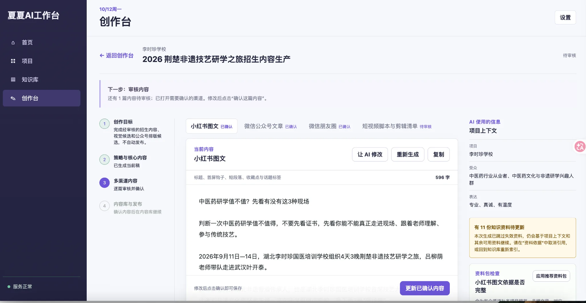

项目上下文优先
进入创作前先明确当前项目，让人物、资料和任务在同一上下文里工作。
AI PRODUCT / CURRENT PROJECT
从一个选题出发，让项目上下文、资料和历史经验进入 AI 创作，再生成不同平台版本。

产品结构
不是单独堆功能，而是让人物、资料、知识、内容、任务和结果都围绕当前项目组织。
核心设计
三个设计都来自真实内容项目中的重复问题：项目上下文容易丢、过去经验难复用、已有资料不应该因为换工具而重新搬运。
进入创作前先明确当前项目，让人物、资料和任务在同一上下文里工作。
历史内容、项目经验和已确认资料，可以被下一次创作直接调用。
保留 Obsidian 和本地文件体系，工作台负责索引、关联和创作调用。
现在能做什么
项目列表会汇总当前项目、项目状态、资料数量与最近更新时间，让我先明确“现在重点在推进什么”。

进入单个项目后，可以继续查看目标与进展、项目概况、资料与经验、阶段总结等信息，避免创作脱离当前项目上下文。

在同一个创作任务中处理小红书、公众号、朋友圈和短视频脚本，并结合项目上下文进行修改、确认与沉淀。

我的工作
这个产品来自我自己的工作需求。我负责把内容项目里反复出现的问题拆成产品需求，并借助 AI 编程工具与开发协作持续实现，再放回真实项目中验证。
当前产品仍在持续迭代；内容生成后会继续编辑与审阅，审批属于质量控制环节，不作为产品核心叙事。